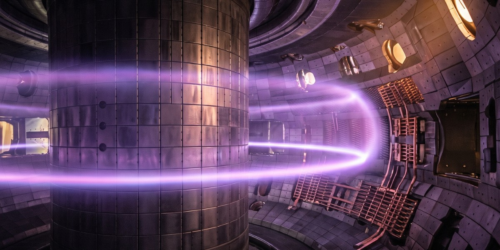

Geekotidien · Édition du 16 novembre 2026
Fusion ondes hélicon
Des ondes hélicon ont alimenté un tokamak sans l'interrompre

Des physiciens ont testé au centre DIII-D une technique de fusion, abandonnée dans les années 1980 : les ondes hélicon. Selon la recherche publiée, ces ondes ont alimenté un tokamak sans l'interrompre.
Les impulsions durent environ dix secondes. Gizmodo, qui rapporte les résultats, indique que la méthode, longtemps délaissée, fonctionne désormais.
Il s'agit de résultats expérimentaux publiés dans une recherche, pas d'une application industrielle.
Le + : Ce n'est pas une centrale à fusion continue pour demain.